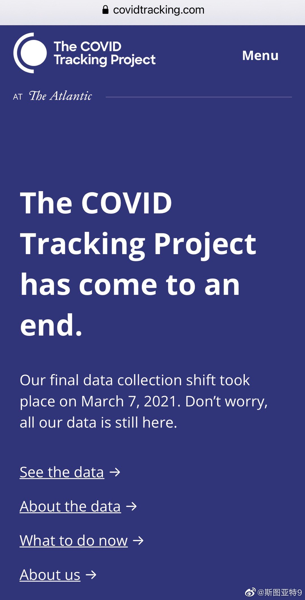
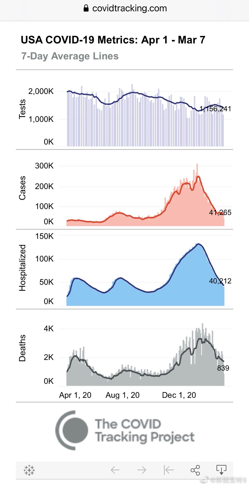

陪伴美国人一年的COVID Tracking Project竟然停止更新了。一年以后，美国CDC的官方数据的质量和可视化程度终于可以满足需要了，民间志愿者收集数据终于不再需要了。感激这个项目这一年的贡献。 
我实在忍不住要说，这个提案本身就是大写的歧视女性。育儿对工作的影响确实是很大的问题。但这对父母都一样。如果说出生前几个月有母乳的因素有一些区别外，3-6岁有什么区别？为什么解决方案是给女性产假？这不是做实了把育儿责任推给女性吗？这不是保护女性权利的提案，这是赤裸裸压迫女性的提案。『委员建议：产假延长至3年到6年 延长幼儿园、小学放学时间至晚6点_手机新浪网』委员建议：产假延长至3年到6年 延长幼儿园、小学放学时间至晚6点